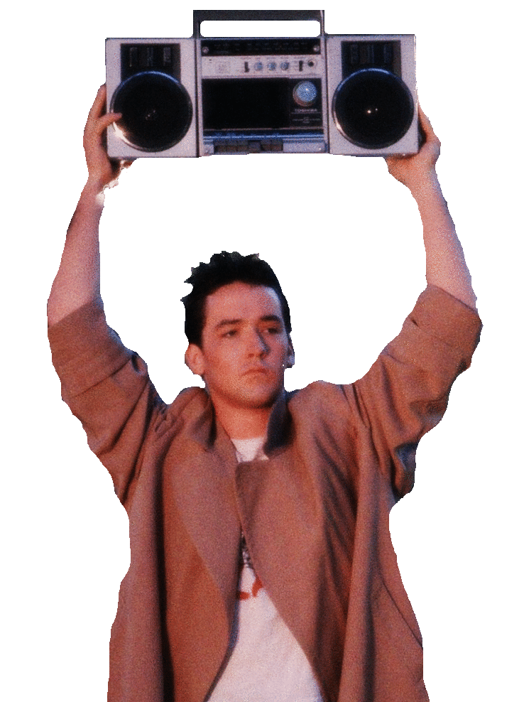

 Introduction: Web Audio API
Introduction: Web Audio API
-
What is the Web Audio API ?
- - A powerful and versatile system for controlling audio on the WWW.
- - Allows developers to choose audio sources, add effects, create audio visualizations, apply spatial effects such as panning, & more.
- - It can be thought of as a routing system for audio in which web developers programatically define input, outflow, & signal flow.